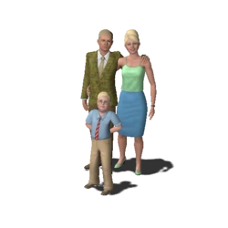

Família Quero-Tudo-Que-É-Seu
A família Quero-Tudo-Que-É-Seu (PT-BR) ou família Terranosa (PT-PT) é uma família de dinastia rica e brilhante que, em The Sims 3, reside em Sunset Valley, vive em Vila Água Azul em The Sims 2: Aberto para Negócios e em Oasis Springs em The Sims 4. A família está, também, disponível para download na Galeria de The Sims 4. Em alguns jogos em que não existe tradução para o português, ela pode ser descrita como "Landgraab", principalmente em The Sims para consoles e The Sims Bustin' Out.
As indústrias Quero-Tudo-Que-É-Seu são destaque em ambos os nomes de construção em SimCity 3000 e marcas de objetos em The Sims. A maior parte da riqueza da família parece vir de propriedades e imobiliário (Em SimCity 3000, eles são associados mais com a construção de imóvel residencial, um papel que ressurgiu em The Sims Bustin' Out, quando a maioria da cidade parece não pagar o aluguel). Em outros jogos The Sims, eles estão mais associados com a propriedade comercial.